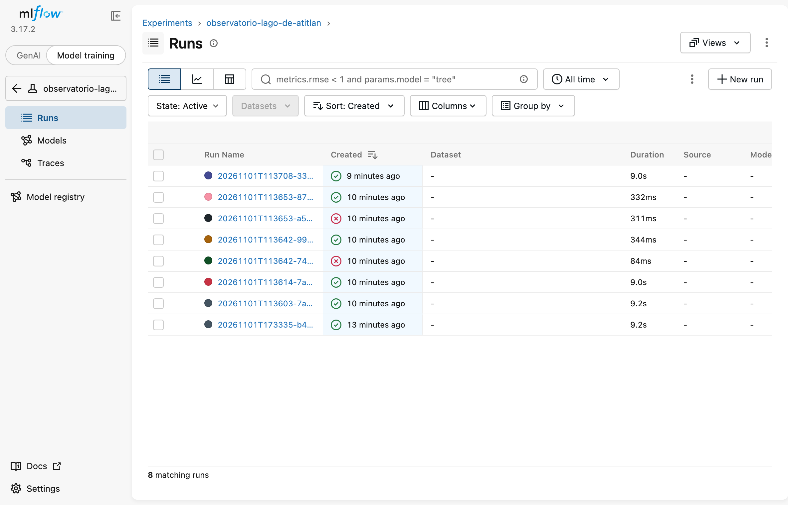
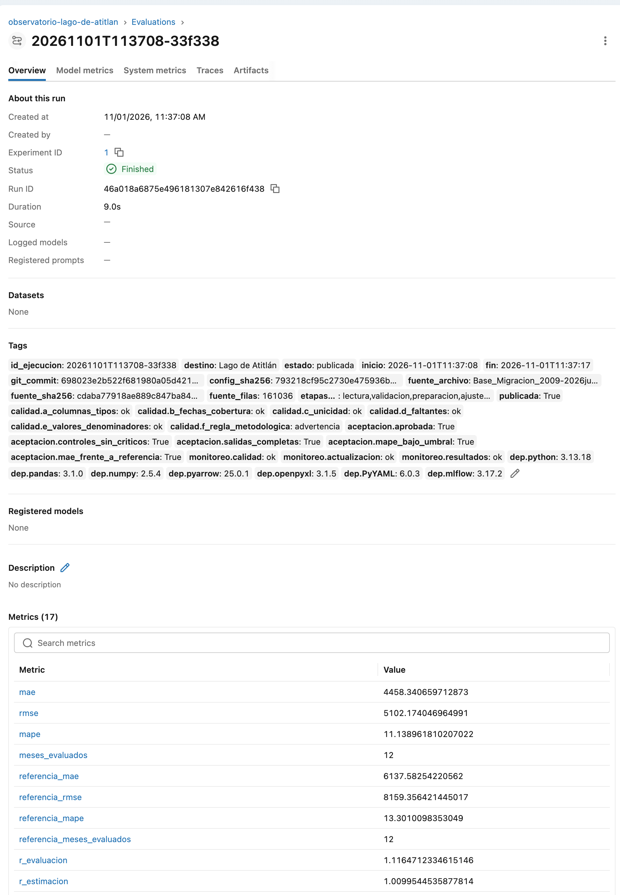
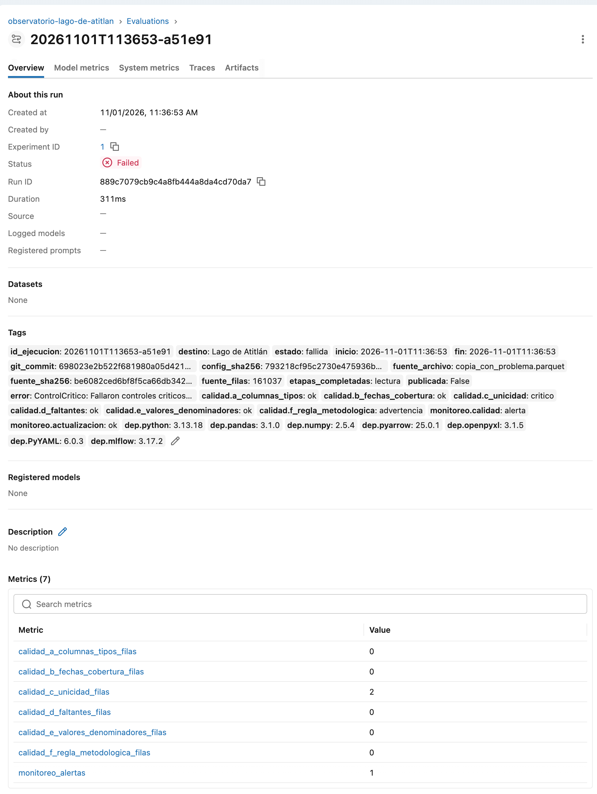
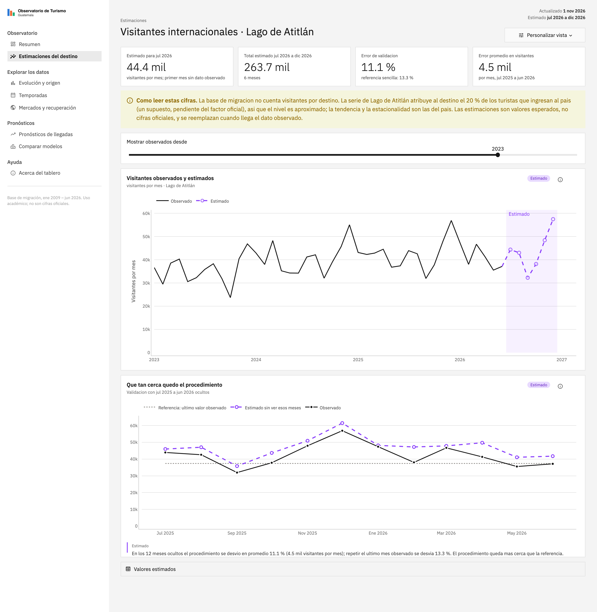
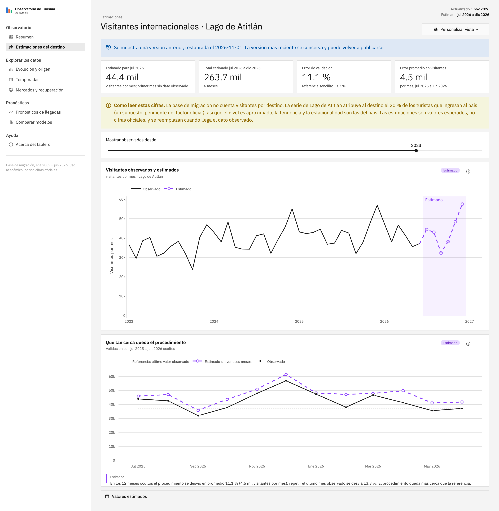

El observatorio actualiza sus estimaciones mensuales del Lago de Atitlan con un solo comando. Cada ejecucion valida la fuente, evalua el procedimiento con meses ocultos, queda registrada en MLflow y solo reemplaza lo que ve el directivo si cumple una regla de aceptacion definida de antemano.
python -m pipeline: lectura, validacion, preparacion, ajuste, evaluacion, estimacion, almacenamiento y publicacion, configurado en config/config.yaml.La documentacion operativa completa (requisitos, comandos, ubicacion de registros) esta en docs/lab11.md y en el README.
| Elemento | Definicion |
|---|---|
| Variable | Visitantes internacionales mensuales atribuidos al Lago de Atitlan (Solola) |
| Unidad y agregacion | visitantes por mes; mensual, destino completo |
| Fuente | Base_Migracion_2009-2026jun.xlsx, hoja Datos, granularidad mensual |
| Columnas | Año, Mes cod, Mes, Vía, Frontera, País, Agrupación Residencia, Tipo de Viajero, Viajero. Indispensables: anio, mes, tipo, viajeros |
| Clave | anio, mes, via, frontera, pais, agrupacion, tipo (nombres internos) |
| Periodos | Ajuste 2023-01 a 2025-06; evaluacion 2025-07 a 2026-06; estimacion 2026-07 a 2026-12. El ajuste empieza en 2023 porque ahi cambia la metodologia de la fuente. |
| Factor de reparto | 0.20 de los turistas y 0.0 de los excursionistas. Supuesto: la base no registra destinos. |
| Resultados para el tablero | salidas/vigente.json apunta a salidas/versiones/<id>/estimaciones.parquet |
destino(t) = sum_tipo factor_tipo * llegadas_tipo(t) y_hat(o + h) = y(o + h - 12) * r(o) r(o) = sum(y[o-11 .. o]) / sum(y[o-23 .. o-12]) ventana k = 12, o = ultimo mes observado
Cada mes estimado repite el mismo mes de doce meses antes, escalado por el crecimiento de los ultimos 12 meses frente a los 12 previos. Es determinista; la semilla (2026) queda fija por si se agregan componentes aleatorios. Un mes sin registros queda vacio, nunca en cero.
vigente.json.python -m pipeline o, con Docker, docker compose run --rm pipeline. No se editan archivos intermedios ni se depende de una sesion abierta.config/config.yaml: rutas, periodos, formula, ventana, factor de reparto, semilla, umbrales de aceptacion y de monitoreo, servidor de MLflow y tolerancia de reproducibilidad. La fuente tambien se puede cambiar con OBS_FUENTE o --fuente.requirements-pipeline.txt): pandas 3.1.0, numpy 2.5.4, pyarrow 25.0.1, openpyxl 3.1.5, PyYAML 6.0.3 y mlflow 3.17.2 sobre Python 3.13. Cada ejecucion registra las versiones instaladas.salidas/ejecuciones/<id>/: registro, manifiesto, reporte de calidad, perfil, monitoreo, serie preparada, evaluacion, estimaciones, observados, metricas, parametros y la configuracion usada.salidas/. Una prueba automatica mueve el filtro de la pagina y verifica que no se ejecuta el pipeline.Cada control termina en ok, advertencia o critico. Un critico detiene el pipeline antes de ajustar, asi que nunca reemplaza la version vigente. Los periodos sin cobertura no se convierten en cero.
| Control | Que verifica | Advertencia | Detiene la ejecucion |
|---|---|---|---|
| a) Columnas y tipos | Columnas de la fuente; tipos de anio, mes, tipo y viajeros | Falta una columna descriptiva | Falta una indispensable o tiene valores no convertibles |
| b) Fechas y cobertura | Fechas validas; cada mes de ajuste y evaluacion con registros | Nombre de mes distinto a su codigo; mes faltante fuera del periodo necesario | Mes fuera de 1-12, anio menor al minimo, fecha futura o mes necesario sin informacion |
| c) Unicidad | Clave anio-mes-via-frontera-pais-agrupacion-tipo | Repetidas solo en tipos no usados | Repetidas en tipos usados (doble conteo) |
| d) Faltantes | Ausencias permitidas frente a las que impiden estimar | Faltan columnas descriptivas o conteos de tipos no usados | Falta anio, mes o tipo, o el conteo de un tipo usado |
| e) Valores y denominadores | Conteos finitos y no negativos; denominador de r | Mes evaluado con observado cero (sale del MAPE) | Conteo negativo o no finito en tipos usados, o denominador de r igual a cero |
| f) Regla metodologica | La serie sale de la fuente mensual: solo turistas y excursionistas, sin columnas diarias ni filas de total, y concilia con la suma directa | Factor de reparto sin fuente documentada | Tipos que no son visitantes, granularidad diaria, filas de total, factor fuera de [0, 1] o serie que no concilia |
Resultado en la version vigente (20261101T113708-33f338): controles a) a e) en ok, sin claves repetidas ni faltantes en 161,036 filas y 210 meses; f) en advertencia porque el factor de reparto es un supuesto. La advertencia no detiene la publicacion pero queda en el reporte, en MLflow y en el tablero.
Cada control tiene pruebas con datos sinteticos para el caso que advierte y el que detiene (tests/test_pipeline.py, 28 pruebas del pipeline). Las que detienen verifican ademas que la version vigente sigue igual.
Experimento observatorio-lago-de-atitlan. El run se crea al inicio: si MLflow no responde, la ejecucion se detiene antes de leer datos y no publica nada que no se pueda rastrear.
| Requisito | Como queda en el run |
|---|---|
| Identificador y fecha | Nombre del run = id de ejecucion; etiquetas inicio y fin |
| Version del codigo | Etiqueta git_commit (en Docker se fija al construir la imagen con GIT_COMMIT) |
| Fuente y su huella | fuente_archivo, fuente_sha256 y fuente_filas |
| Periodos y parametros | Parametros periodo_*, formula, ventana_nivel, factor_*, umbrales; config_sha256 y el artefacto config.yaml |
| Metricas y controles | mae, rmse, mape y las de la referencia (solo si la evaluacion se completo); etiquetas calidad.*, aceptacion.*, monitoreo.* |
| Archivos | Estimaciones, configuracion, parametros.json (todo lo necesario para reproducir la formula), reporte de calidad, manifiesto y registro.log |

Consulta con python -m pipeline.consultar (archivo completo en evidencia/mlflow_ejecuciones.csv):
| Ejecucion | Estado | Commit | Huella fuente | MAE | MAPE | Causa del fallo |
|---|---|---|---|---|---|---|
| 20261101T173335-b4655f | publicada | 7cafe5b | cdaba779 | 4,458 | 11.14 % | |
| 20261101T113603-7aa3b6 | publicada | 698023e | cdaba779 | 4,458 | 11.14 % | |
| 20261101T113614-7a0ca0 | publicada | 698023e | cdaba779 | 4,458 | 11.14 % | |
| 20261101T113642-74246e | fallida | 698023e | 8f78dc8a | - | - | Control a): falta la columna indispensable Viajero |
| 20261101T113642-993761 | publicada | 698023e | f6fdbce2 | 4,458 | 11.14 % | |
| 20261101T113653-a51e91 | fallida | 698023e | be6082ce | - | - | Control c): 2 filas con clave repetida en tipos usados |
| 20261101T113653-87a4ab | publicada | 698023e | f6fdbce2 | 4,458 | 11.14 % | |
| 20261101T113708-33f338 | publicada (vigente) | 698023e | cdaba779 | 4,458 | 11.14 % |
113614-7a0ca0 y 113708-33f338 y las compara: diferencia maxima 0 visitantes en los 6 meses y diferencia de MAE 0. La tolerancia configurada es 1e-6 visitantes, solo para redondeo de punto flotante; el procedimiento es determinista y no hubo diferencias que explicar.

La primera ejecucion en Docker (173335-b4655f) tiene la hora en UTC en su id porque la imagen aun no fijaba la zona horaria. Se corrigio en el commit 698023e; desde ahi los contenedores usan la hora de Guatemala.
Se ocultaron los 12 meses observados de julio de 2025 a junio de 2026 y se estimaron desde el origen junio de 2025, con r calculado solo con datos hasta ese mes (r = 1.116). Ningun dato posterior al origen entra al calculo: una prueba multiplica por 10 los datos futuros y verifica que la estimacion no cambia. Ambos procedimientos se evaluaron sobre los mismos 12 meses.
| Procedimiento | MAE (visitantes) | RMSE | MAPE |
|---|---|---|---|
| Estacional con ajuste de nivel | 4,458 | 5,102 | 11.14 % |
| Referencia: ultimo valor observado (jun 2025, 37,385) | 6,138 | 8,159 | 13.30 % |
| Mes | Observado | Estimado | Error | Referencia | Error ref. |
|---|---|---|---|---|---|
| jul 2025 | 43,936 | 45,995 | +4.7 % | 37,385 | -14.9 % |
| ago 2025 | 42,589 | 47,053 | +10.5 % | 37,385 | -12.2 % |
| sep 2025 | 31,951 | 35,810 | +12.1 % | 37,385 | +17.0 % |
| oct 2025 | 37,798 | 43,664 | +15.5 % | 37,385 | -1.1 % |
| nov 2025 | 47,937 | 50,952 | +6.3 % | 37,385 | -22.0 % |
| dic 2025 | 56,922 | 61,476 | +8.0 % | 37,385 | -34.3 % |
| ene 2026 | 47,396 | 48,172 | +1.6 % | 37,385 | -21.1 % |
| feb 2026 | 38,036 | 47,223 | +24.2 % | 37,385 | -1.7 % |
| mar 2026 | 46,696 | 47,870 | +2.5 % | 37,385 | -19.9 % |
| abr 2026 | 41,304 | 49,739 | +20.4 % | 37,385 | -9.5 % |
| may 2026 | 35,553 | 41,079 | +15.5 % | 37,385 | +5.2 % |
| jun 2026 | 37,152 | 41,739 | +12.3 % | 37,385 | +0.6 % |
El procedimiento supera a la referencia (su MAE es 73 % del de la referencia) porque sigue la estacionalidad, que la referencia ignora. Pero sobreestimo 11 de los 12 meses: r = 1.116 extrapola el crecimiento entre 2024 y 2025, que en 2026 se desacelero. El MAPE excluye los meses con observado igual a cero y reporta cuantos excluyo; en este periodo no hubo ninguno.
Una version candidata se publica solo si cumple las cuatro condiciones. Los umbrales estan en config/config.yaml y la regla se aplica en pipeline/run.py.
| Condicion | Valor en la version vigente | Umbral | Cumple |
|---|---|---|---|
| Ningun control de calidad critico | 0 criticos, 1 advertencia | 0 criticos | si |
| Salidas completas, finitas y no negativas | 6 de 6 meses, de 32,269 a 57,489 | 6 meses | si |
| MAPE de la evaluacion | 11.14 % | 15 % como maximo | si |
| MAE frente al de la referencia en los mismos meses | 0.73 veces | 1.25 veces como maximo | si |
vigente.json.La pagina Estimaciones del destino lee salidas/vigente.json y los archivos de esa version. Cada archivo de estimaciones trae destino, periodo, valor, unidad, tipo de valor, id de ejecucion, fecha de generacion y version del procedimiento. Lo observado va en linea negra continua y lo estimado en violeta discontinuo con puntos huecos, con el tramo estimado sombreado y la etiqueta "Estimado" que usa el resto del tablero. La pagina muestra la fecha de actualizacion, el error de validacion con una explicacion breve y los meses evaluados, y una advertencia sobre el factor de reparto. Los parametros y las ejecuciones quedan en MLflow y en la documentacion; la interfaz sigue pensada para directivos. Si no hay version aprobada, dice que las estimaciones no estan disponibles.

20261101T113708-33f338: indicadores, advertencia de lectura, serie observada y estimada, y validacion frente a la referencia.Registro por ejecucion. registro.log guarda la hora de cada evento, las etapas completadas, el resultado de cada control y verificacion, las advertencias, los errores y el resultado de la publicacion; manifiesto.json guarda inicio, fin, etapas, estado y error. Registro de la ejecucion fallida por duplicado (lineas seleccionadas, sin la fecha; ... indica texto recortado):
11:36:53 INFO Inicio de la ejecucion 20261101T113653-a51e91 (destino Lago de Atitlán) 11:36:53 INFO Run de MLflow 889c7079cb9c4a8fb444a8da4cd70da7 en http://mlflow:5000 11:36:53 INFO Etapa completada: lectura 11:36:53 INFO Control a_columnas_tipos: ok - Columnas y tipos completos 11:36:53 ERROR Control c_unicidad: critico - 2 filas con clave repetida (2 en tipos usados); clav... 11:36:53 WARNING Control f_regla_metodologica: advertencia - el factor de reparto es un supuesto ... 11:36:53 WARNING Monitoreo calidad: alerta - aumentaron los claves repetidas: de 0 a 2 11:36:53 ERROR Ejecucion detenida en la etapa validacion: Fallaron controles criticos: c_unicidad... 11:36:53 INFO Resultado: fallida
| Verificacion | Que revisa | Umbral y justificacion |
|---|---|---|
| Actualizacion | La fuente llega al ultimo periodo esperado (2026-06) y las estimaciones empiezan el mes siguiente | Cobertura configurada. Tambien avisa si la fuente ya trae meses que la configuracion no usa |
| Calidad | Filas, faltantes, claves repetidas y meses con datos frente al perfil de la version vigente | Filas: 10 %. Un mes nuevo agrega cerca de 0.5 % de filas, asi que mas indica un cambio de estructura. Faltantes, duplicados y cobertura: cualquier deterioro |
| Resultados | Estimaciones negativas o no finitas; variacion interanual; cambio frente a la version vigente | Interanual 30 %: desde 2024 el 95 % de las variaciones observadas es menor que 28 %. Entre versiones 10 %: un mes nuevo mueve r pocos puntos |
Una alerta queda en el registro, el manifiesto, MLflow y una nota del tablero, y pide revision. Por si sola no rechaza la version ni demuestra perdida de precision. El error predictivo solo se recalcula en la evaluacion, donde hay observaciones comparables.
python -m pipeline.prueba_controlada copia la fuente, introduce un problema en la copia, ejecuta, verifica que la version aprobada siga igual (huella de sus archivos), corrige la copia y vuelve a ejecutar. La fuente original nunca se modifica.
| Problema introducido | Ejecucion con el problema | Vigente antes y despues | Tras corregir |
|---|---|---|---|
| Columna Viajero eliminada | 74246e fallida; control a) critico | 7a0ca0 y 7a0ca0, archivos sin cambios | 993761 publicada |
| Fila de turistas duplicada | a51e91 fallida; control c) critico y alerta de calidad | 993761 y 993761, archivos sin cambios | 87a4ab publicada |
Las pruebas automaticas cubren ademas el denominador de r igual a cero con datos sinteticos.
salidas/versiones/ conserva todas las versiones aprobadas (ocho, incluidas dos del 29 de octubre). Restaurar solo cambia vigente.json de forma atomica, sin borrar nada:
python -m pipeline.restaurar --listar # * marca la vigente python -m pipeline.restaurar --anterior # la que estaba antes de la vigente python -m pipeline.restaurar --id 20261101T113614-7a0ca0
Se restauro 113614-7a0ca0; el tablero la mostro al recargar y avisa que es una version anterior. Despues se volvio a la ultima publicada, 113708-33f338, que el tablero vuelve a mostrar sin aviso.

| Servicio | Que hace | Carpetas montadas |
|---|---|---|
| mlflow | Servidor de MLflow 3.17.2 en 127.0.0.1:5000, base SQLite y artefactos servidos por el propio servidor | mlflow/ |
| tablero | Streamlit en 127.0.0.1:8501 | data/, salidas/ (solo lectura), config/ |
| pipeline | Una ejecucion por docker compose run --rm pipeline; tambien consulta, prueba controlada y restauracion | data/ (solo lectura), salidas/, config/, evidencia/ |
.dockerignore excluye data/; se verifico que la imagen no contiene ningun xlsx. La carpeta de datos se cambia con DATOS_DIR.salidas/ y mlflow/ son carpetas del repositorio montadas en los contenedores; sobreviven a docker compose down y a reconstruir la imagen..git en la imagen: GIT_COMMIT se pasa al construir y el pipeline lo registra.Se clono el repositorio desde GitHub en una carpeta nueva, sin mlflow/ ni salidas/ejecuciones/, y se corrio:
export GIT_COMMIT=$(git rev-parse HEAD) docker compose build docker compose up -d docker compose run --rm pipeline docker compose run --rm pipeline python -m pytest tests/test_pipeline.py docker compose down && docker compose up -d docker compose run --rm pipeline python -m pipeline.consultar
Resultado: la ejecucion se publico con las mismas metricas (MAE 4,458.34, MAPE 11.14 %), las 28 pruebas del pipeline pasaron dentro del contenedor, el tablero y MLflow respondieron, y despues de recrear los contenedores el run seguia en MLflow y vigente.json seguia apuntando a la version publicada.
python -m pytest tests.